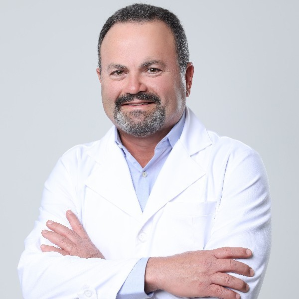
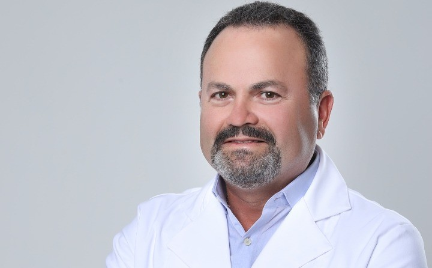

Cirurgião plástico · CRM-BA 9263 · RQE 2436
Dr. Gilvan PinhoRenascence Cirurgia Plástica · Alphaville, Salvador
Cirurgia plástica de mamas, abdome e face, na clínica que leva o nome dele.
Membro especialista da Sociedade Brasileira de Cirurgia Plástica e sócio único da Renascence desde 2015, no Edf. Alpha Medical Center, em Alphaville I.
4,8 ★★★★★ 14 avaliações no GoogleAtendimento com hora marcada

Por onde começar
Escolha um assunto e leia com calma.
Informações gerais para ler antes da consulta, organizadas pelos procedimentos que a Renascence apresenta. A indicação é sempre individual, definida em consulta.
Quero entender a prótese de silicone
Volume, formato, posição do implante e o acompanhamento ao longo dos anos.
Prótese de siliconeMamasMinhas mamas caíram ou perderam firmeza
A mastopexia, com ou sem prótese, e as cicatrizes.
MastopexiaAbdomeA flacidez do abdome me incomoda
Abdominoplastia e quando a lipoaspiração entra no plano.
AbdominoplastiaFacePenso em rejuvenescer o rosto
Lifting facial: o que é, onde ficam as cicatrizes e a recuperação.
Lifting facialProcedimentos
O que ele faz, como a clínica apresenta.
Os termos entre aspas são da própria Renascence, na legenda de uma foto publicada na ficha da clínica no Google, em junho de 2025. Cada linha abre uma página com informações gerais.
A indicação é individual, definida em consulta. Toda cirurgia tem riscos, explicados antes de qualquer decisão.
A clínica
A Renascence, em Alphaville.
Desde 4 de setembro de 2015, o Dr. Gilvan é o sócio único da Clínica de Cirurgia Plástica Dr. Gilvan Pinho, que atende com o nome Renascence Cirurgia Plástica, no Edf. Alpha Medical Center.

- Alpha Medical CenterAv. Luís Viana Filho, 7416 · salas 815 a 818 · Alphaville I
- Hora marcada“Necessário fazer agendamento”, informa a ficha do Google
- Estacionamento cobertoPago, segundo a ficha do Google
- AcessibilidadeEntrada, estacionamento, assento e banheiro para cadeira de rodas

Nas palavras dele
“Por mais que você ache aquela atriz linda ou sonhe com o corpo daquela modelo, saiba que cada mulher possui uma beleza única.”
“Comparações só irão causar tristeza e frustração.”
“Claro que você pode se inspirar, isso é natural, mas não queira ser uma cópia […]”
“[…] faça as pazes com o espelho e descubra como você é especial!”
Dr. Gilvan Pinho, na legenda de uma publicação no Instagram (@drgilvan.pinho).
Trajetória
O que se pode conferir.
Sociedade, registro, clínica e hospital: cada linha traz a fonte pública de onde a informação saiu.
Sobre o Dr. Gilvan- SBCPAssociado (Membro Especialista) da Sociedade Brasileira de Cirurgia PlásticaFonte: busca pública da SBCP, “Encontre um cirurgião”
- RegistroCRM-BA 9263 · RQE 2436, cirurgião plásticoFonte: perfil na Doctoralia e assinatura das publicações dele no Instagram
- 2015Início das atividades da Clínica de Cirurgia Plástica Dr. Gilvan Pinho (Renascence Cirurgia Plástica), com ele como sócio únicoFonte: Receita Federal · CNPJ 23.215.484/0001-91, início das atividades em 04/09/2015
- Desde 2020Vínculo com o Hospital da Bahia, em Salvador, como cirurgião plásticoFonte: registro no CNES (Cadastro Nacional de Estabelecimentos de Saúde), desde outubro de 2020
- HojeAtende na Renascence, no Edf. Alpha Medical Center, em Alphaville IFonte: perfil na SBCP e ficha da clínica no Google
Avaliações no Google
O que os pacientes escreveram.
Qualidade do serviço oferecido é top!
Excelente médico! Talentoso e perfeccionista.
Excelente médico ! Profissional incrível.
Trechos de avaliações públicas da ficha da Renascence no Google, com nome abreviado e a data informada pelo Google.
A primeira consulta
Do primeiro contato à decisão.
A consulta com o cirurgião plástico é o começo: é nela que a indicação é feita, ou não. Leve as suas dúvidas anotadas e os exames que tiver.
Como se preparar para a consulta- O contatoPelo WhatsApp (71) 98205-7627 ou pelo telefone (71) 3901-1631, os números da ficha da clínica no Google.
- A hora marcadaA consulta é agendada: “Necessário fazer agendamento”, informa a ficha.
- A conversaA sua queixa, o que você deseja, a sua história de saúde e o exame.
- As informaçõesOpções, riscos, cuidados e recuperação, explicados para o seu caso.
- A decisãoTomada por você, com calma e com as informações na mão.
Para ler antes da consulta
Guias, um por procedimento.
Informação geral e prudente, para quem está começando a pesquisar. Não substitui a consulta, em que a indicação é feita caso a caso.
Prótese de silicone
Volume, formato, posição do implante e o acompanhamento ao longo dos anos.
Ler o guiaMamasMastopexia, com ou sem prótese
Quando a queixa é a queda das mamas, e o que muda quando a prótese entra no plano.
Ler o guiaAbdomeAbdominoplastia
Pele, musculatura e por que não é uma cirurgia para emagrecer.
Ler o guiaContornoLipoaspiração
O que ela faz, o que ela não faz e a diferença para a abdominoplastia.
Ler o guiaFaceLifting facial
Os sinais que levam à consulta, as cicatrizes e a recuperação.
Ler o guiaInstagram · @drgilvan.pinhoComparação, inspiração e o espelho
A publicação em que o Dr. Gilvan fala de beleza única e de não querer ser uma cópia.
Ver no InstagramConsultório
Edf. Alpha Medical Center, Alphaville I.
Na Av. Luís Viana Filho (Paralela), com estacionamento coberto pago e acesso para cadeira de rodas, segundo a ficha da clínica no Google.
Renascence Cirurgia PlásticaEdf. Alpha Medical Center · Av. Luís Viana Filho, 7416, salas 815 a 818 · Alphaville I · Salvador – BA · CEP 41701-005
Horário de atendimento
Horário da ficha da clínica no Google. Atendimento com hora marcada — confirme com a equipe.
Telefone (71) 3901-1631 · WhatsApp (71) 98205-7627
Dúvidas frequentes
Perguntas comuns
Onde fica a clínica?
Na Renascence Cirurgia Plástica: Edf. Alpha Medical Center, Av. Luís Viana Filho, 7416, salas 815 a 818, Alphaville I, Salvador. Veja endereço, horário e mapa.
Como agendar uma consulta?
Pelo WhatsApp (71) 98205-7627 ou pelo telefone (71) 3901-1631, os contatos da ficha da clínica no Google. A consulta é com hora marcada.
O Dr. Gilvan é membro da SBCP?
Sim. Na busca pública da Sociedade Brasileira de Cirurgia Plástica, ele aparece na categoria Associado (Membro Especialista). Ele assina CRM-BA 9263 · RQE 2436.
Onde são feitas as cirurgias?
O local de cada cirurgia é informado em consulta. No Cadastro Nacional de Estabelecimentos de Saúde (CNES), o Dr. Gilvan tem vínculo registrado com o Hospital da Bahia, em Salvador.
Aceita convênio? Quais as formas de pagamento?
Confirme com a equipe as condições de atendimento. A ficha da clínica no Google informa pagamento com cartão de crédito e de débito.
Tem estacionamento?
A ficha do Google informa estacionamento coberto pago e acessibilidade para cadeira de rodas na entrada, no estacionamento, no assento e no banheiro.
A consulta já define a cirurgia?
A consulta serve para avaliar a sua queixa e explicar as opções, com riscos e recuperação. A indicação é individual, e a decisão é sua.
Agende
Uma conversa com o Dr. Gilvan, na Renascence.
Atendimento com hora marcada no Edf. Alpha Medical Center, em Alphaville I. Fale com a equipe pelo WhatsApp (71) 98205-7627 ou pelo telefone (71) 3901-1631.